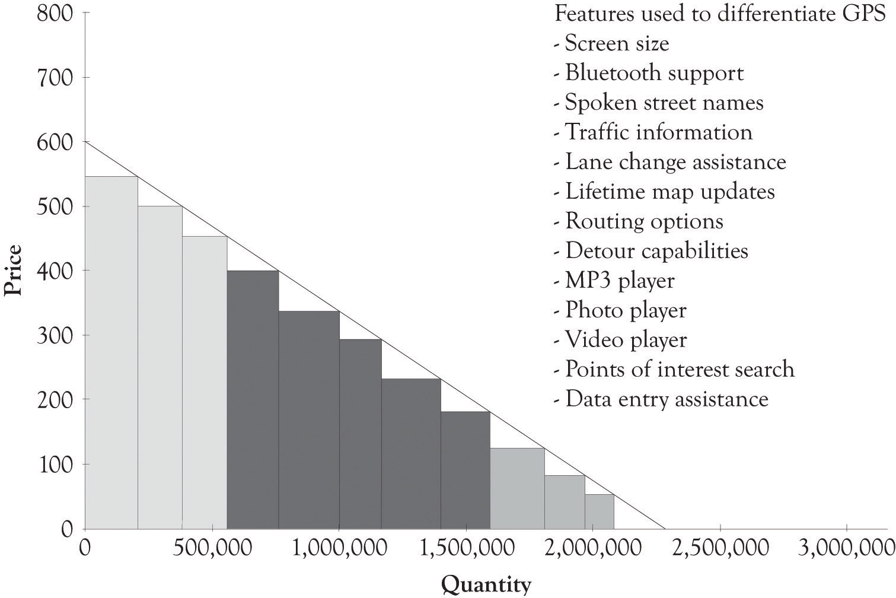

One model of the Wenger Swiss Army knife, called the Giant, has 87 tools, performs 141 functions, and costs $1,400.http://www.wengerna.com/giant-knife-16999 If you were sent to a deserted island and were limited to what you could bring, that knife would certainly be on a short list of must-have items. The Giant was probably introduced because Wenger could introduce it and also because it creates a great image in the mind of consumers. Wenger has excellent engineering skills. In general, however, specialized tools perform better than the all-in-one tool. There is a trade-off between having everything in one place that is readily accessible and having superb capabilities and functionality. The cork-screw, the scissors, the magnifier, the golf club cleaner, and the wire cutter in a Swiss Army knife are OK, but they are not the best tools for doing the respective jobs.
Wireless phones have become the Swiss Army knife for communication, networking, and entertainment. Not all the implements (camera, music playing, video, net interface, retail showroom and purchasing, gaming, GPS, social networking, and communications) are stellar; they are, however, always available to the user. Apple has been very successful at integrating features on the iPhone, the iPad, and their other products that are attractive to their customers, but they are very cautious in adding features for feature sake.Manjoo (2010). Some of the hubris exhibited by Apple is attributable to the cache of the superb Apple brand. But there is a secret sauce for Apple’s success. There are strong design principles at work at Apple, involving minimalism, attention to quality, and focusing on the design of a high-quality user interface. Apple is also very big on attaching meaning to their entire product portfolio. Their commercials exude the development of meaning. The Flip Mino video camera was once very successful because it was simple and very easy to use. The very young and the old are always looking for easy-to-use products and services.
Feature creepOccurs when a new feature is added and many of the old features are retained. occurs when a new feature is added and many of the old features are retained. Sometimes features are beneficial. Sometimes they become vestigial and forever encoded in the DNA of the product or service. They are like vestigial physical characteristics in human beings that are no longer needed. For example, humans have tailbones or coccyx, but they do not have tails. Once a feature is in place, it is difficult to remove it because some company will use the features to illustrate how they have more features than their competition. Automobile GPSs illustrate how feature creep occurs over time. Feature creep has been the boom and the boon of companies that produce automobile GPS applications. Figure 7.6 "Features Used to Differentiate GPS Offerings" illustrates the numerous product features that can be found in automobile GPS products. It is unlikely that many people are using the MP3 and photo players on their auto GPSs to play music or view photos, but these features have crept into many of the units sold by GPS manufacturers. The point is that there are instances where it might make sense to scale back on features because the features are either truly vestigial or overkill. This would also reduce the cognitive burden facing consumers because of the numerous choice points. Sometimes the vestigial features hinder design changes and can adversely affect the ability to add new features that are truly valuable to the consumer. One of the greatest impediments facing hardware and software developers in redesigning systems is in maintaining backward compatibility.
Figure 7.6 Features Used to Differentiate GPS Offerings
